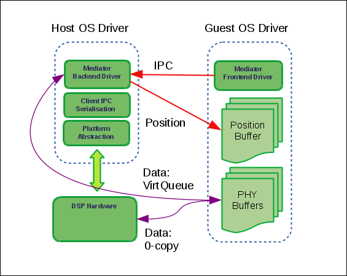
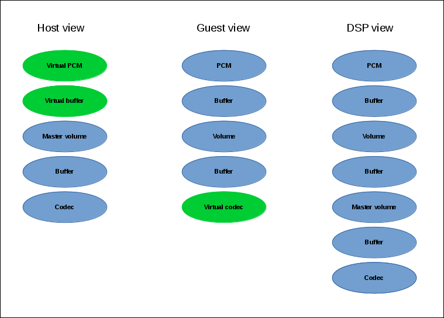
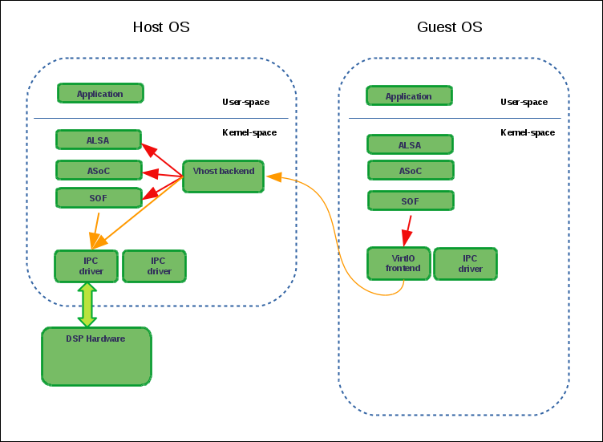

SOF VirtIO design#
General information#
This document describes the Linux driver architecture to virtualize SOF DSP firmware features across multiple guest VMs.
The following components are described:
SOF VirtIO (Virtual Frontend) driver to be run on a guest virtual machine.
SOF vhost (Virtual Backend) driver to be run on the host.
SOF audio topology for both host and guest.
SOF supporting code in QEMU.
This driver architecture allows full SOF audio use cases to reside on either the guest VM, or host, or both. It also allows non audio DSP firmware features to be virtualized on guests.
VirtIO is a platform-agnostic virtualization standard, managed by OASIS. It defines a design and a protocol for implementing device IO in VMs.
Different machine-level virtualization designs exist, and each implements a different software configurations. Typically each design has one instance of a general purpose OS that runs either directly on the hardware, or at least with direct unrestricted access to the hardware. This instance is usually called a “host.” Within that host OS, one or more user-space processes exist that further emulate independent virtual machines and run their own complete instances of general-purpose OSes. Those instances are called “guests.”
When Linux is running in a VM, multiple drivers are already available, using virtio: networking, storage, etc. Those drivers use the virtio and virtqueue APIs to communicate with the host or, potentially, with other guests.
The host part depends on the used virtualization solution. Some solutions implement the VirtIO API themselves while using their method of choice to talk to the host on which they are running. A typical Linux virtualization implementation uses QEMU + KVM to run guest instances. In this case, a VirtIO host can be implemented in the user space or in the kernel. If implemented in the user space, it is managed by QEMU. In thekernel space, VirtIO host drivers use the Linux vhost API.
Note that VirtIO guest drivers reside in their respective driver subdirectories in the Linux kernel, such as drivers/net, drivers/block, etc. On the contrary, all vhost drivers are located under drivers/vhost. That directory also contains vhost.c and vhost.h which are used by all vhost drivers.
Every VirtIO driver requires explicit support in QEMU, which can be very minimal and simple in cases where all the functionality is implemented in VirtIO and vhost drivers, or it can actually implement a user-space counterpart to VirtIO drivers on the guest. In our case, the SOF QEMU support code is rather minimal; it only adds support for guest reset reporting and guest identification to a set standard and mostly empty device node and virtual queue management operations.
SOF VirtIO design#
The SOF VirtIO design implements an interface to transport IPC ( Inter-Process Communication) commands and audio data between host and guests. It re-uses the SOF-defined IPC API (that is also used by the native SOF driver) to communicate with the SOF firmware that is running on the audio DSP. This means that the virtualization mechanisms are inserted between the SOF host driver and the DSP hardware. Thus, IPC messages that the guest SOF driver sends to the DSP are instead sent to the host, which then forwards them to the DSP firmware, and then returns the response.
Typically an IPC message exchange between the driver and the DSP takes place over a mailbox and a doorbell. A mailbox is a shared memory region between the DSP and host. It is used for the IPC message payload. A doorbell is asynchronous signaling hardware between DSP and host. This mailbox / doorbell interface can be hardware-specific; thus, every hardware variant provides its own set of mailbox / doorbell handling operations. This virtualization solution creates its own set of IPC operations to redirect IPC messages from the guest over virtual queues to the host.
We use the same IPC message structures; we also add three more VirtIO-specific IPC messages but they are never sent to the DSP, so the firmware doesn’t need to support them. For the most part, IPCs from guests are forwarded without change by the host driver to the DSP; only some of them are intercepted on the host. Some IPC messages trigger additional actions on the host before being forwarded to the DSP; others aren’t sent to the DSP at all. See examples below for more details.
Communication channels#
The goals of SOF virtualization are:
Enable streaming to/from guest audio endpoints with the lowest possible overhead.
Allow a guest to control some of the processing on the DSP while isolating it from other parts of the graph owned by the host or other VMs.
This includes avoiding copying of audio data and stream position updates. In this case, only one VirtQueue would be required for IPC message exchange. However, the initial version also transfers data and stream position updates via VirtQueues. That means that the SOF VirtIO / vhost drivers currently use three VirtQueues: for IPC, audio data, and stream position updates. Plans to support both the copying and the zero-copy methods are forthcoming. The copying method will be used either where the zero-copy method is unavailable or for debugging.
The low latency requirement also forces us to only support the vhost mode; no plans exist to implement SOF VirtIO host support in the user space.
Below is the SOF VirtIO architecture:

Topology#
When running natively, the SOF driver uses the ALSA topology API to configure audio pipelines on the DSP. The SOF driver reads a platform-specific topology file from the filesystem, parses it, and sends all the components from it to the DSP firmware for their instantiation, configuration, and enablement.
When configured to support virtualized audio, the host topology additionally provides connection points for guest audio pipelines. Guest playback pipelines might, for example, connect to mixer and capture pipelines to demultiplexer components. In this way, both the host and possibly multiple guests can share parts of the audio topology. It is also possible to dedicate certain audio pipelines to specific guests only. In such cases, guest pipeline fragments can be connected to other component types such as volume control. The term “connection points” is used throughout this document to refer to these locations in the host audio topology. In the example topology image below, the sink endpoint of the “Master volume” component is a connection point.
The ALSA / ASoC / DAPM subsystems on the host are unaware of any guests, but they should be aware of any streaming taking place on host parts of VM pipelines for configuration and power management. That means that if, for example, a guest initializes playback, the ASoC subsystem on the host should be aware that the pipeline joining the respective connection point and the used codec is currently performing audio playback. To achieve this, for each such guest connection point we add a virtual PCM as a widget of type “aif_in” or “aif_out” for playback and capture respectively, and a virtual 0-size buffer. The 0-size buffer is required by ALSA which mandates that one side of each topology connection must always be a buffer. These virtual components are only visible on the host and are not sent to the DSP. When processed by the ASoC topology parser, those virtual PCM widgets serve as DPCM front-ends and thus create front-end DAI links and ASoC PCM runtime contexts. These are later used for guest audio stream management.
When running in a VM, the SOF driver also uses ALSA topology; in this case, the guest topology should have no relation to the host hardware. The guest audio topology should be decided upon by the host system administrator. Therefore we let the SOF instance, running on the guest, obtain topology from the host. Such a topology should only contain “software components” like PCMs, buffers, and software volume controls. Those components thus represent partial pipelines that will then be linked to connection points of the host SOF topology.
Given this design, the topology is represented in the following way:

DSP: Has a full topology, including host and guests components. No distinction is made between the host and any guests.
host: The SOF driver core, running on the host, and the ASoC subsystem only see the host topology. The vhost driver manages connection points between the host and the guests’ topology fragments.
guest: Only “sees” the guest components; therefore, the driver cannot address components that do not belong to its topology.
Refer to the SOF virtualized IPC paths below:

As mentioned above, SOF IPC messages from guests are forwarded exactly 1-to-1 to the DSP. For example, if a guest sends an IPC message to adjust the audio volume on one of the components from its topology, it will be forwarded to the DSP. That IPC contains the volume component ID as seen by the respective guest. Therefore, it should be exactly the same ID as the one used by the firmware.
DPCM audio routing#
In the most trivial case when a user-space application opens an audio interface, there is a unique sequence of audio components, involved in this operation, that will comprise a DPCM audio route. Such a sequence is called an audio pipeline. However, modern audio hardware often contains more complex audio graphs, sometimes requiring dynamic re-routing. Support for such configurations is provided by the ASoC DPCM API. We also use this API to activate and deactivate guest audio interfaces.
Implementation#
Initialization#
The SOF driver probing on the host remains unmodified except that the vhost driver is also initialized; this registers a newly-added /dev/vhost-dsp misc device that is used by guests to establish VirtQueue links and control the SOF vhost driver, using dedicated vhost ioctls.
When QEMU starts a guest instance, it detects the above misc device and creates a PCI device for the guest with dedicated vendor and device IDs. All vhost PCI devices use the Qumranet / RedHat vendor ID and are allocated a device ID from a range, specially donated by RedHat for this purpose.
The SOF VirtIO driver on the guest registers support for that PCI device and its .probe() method is called.
During the SOF VirtIO driver probing, the QEMU SOF code reports to the vhost driver which VM image is being instantiated. This is used as a reliable guest identification and is needed for SOF guest audio topology selection.
The SOF driver on the guest performs partial initialization; it skips any steps involving communicating with the actual DSP such as sending the firmware, booting it, and initializing the tracing interface.
The VirtIO driver on the guest uses a new SOF_IPC_TPLG_VFE_GET VirtIO-specific IPC message to request the topology from the host. The host reads the file that corresponds to the guest ID (obtained from the QEMU communication described above) from its filesystem, and then sends it in multiple chunks to the guest in reply to that request.
Guest topology files contain virtual DAI components of type “dai_out” and “dai_in.” Their data tuples contain a new token of type SOF_TKN_COMP_REF, which contains an ID of the connection point, to which this pipeline should be attached.
After obtaining the topology, the guest SOF instance uses a second new SOF_IPC_TPLG_VFE_COMP_ID VirtIO-specific IPC message to request its allocated component ID base. It then uses this base to assign IDs to all of its topology components. Those components are then sent to the DSP firmware. This ensures that no two components that are sent to the DSP have the same ID. Note that gaps in component IDs are allowed and don’t have any side effects.
The host maintains a list of guest component ID ranges to guarantee that component IDs stay unique regardless of the order in which guests are brought up and down.
Next, the guest proceeds by sending the parsed topology over IPC to the host, which is then forwarded to the DSP firmware. The guest uses the .send_msg() callback to forward any IPC (including topology related) to the host with no processing at all. The only exception is blocking IPCs when the guest is resuming while the host does not need to be resumed (see reset count in Deactivation for details).
The host receives the parsed guest topology over the IPC virtual queue. In most cases, the host IPC handler just forwards IPCs to the DSP; in other cases, it has to handle or modify IPC contents locally. One such example is linking the guest and host topology fragments together. As mentioned above, guest topology files contain a new token that references connection point components in the host topology. This value is then assigned to the .ref_comp_id field of struct sof_ipc_comp_config during topology file parsing and is sent by the guest to the host. The host then uses that value to modify SOF_IPC_TPLG_COMP_CONNECT connection IPC messages, involving connection points, from the guest before sending them to the DSP.
Streaming#
Guest audio streaming is mostly transparent for the host. The host audio subsystem doesn’t get involved with most guest streaming or kcontrol operations because the virtualization is applied at the SOF hardware driver level, not at the ASoC API level. Those operations are completely processed on the guest and only resulting DSP IPCs are forwarded to the host. The only exceptions are beginning and ending of the streaming, at which times the ASoC subsystem on the host has to be informed that a certain pipeline is becoming active or inactive respectively.
The SOF vhost driver uses the STREAM_PCM_PARAMS IPC message from the guest to allocate an ALSA PCM runtime object and configure the audio hardware. If zero-copy is not used and audio data is transferred via VirtQueues, DMA buffers are also allocated.
Upon reception of the STREAM_TRIG_START IPC message, the vhost driver activates the associated pipeline and updates the DPCM routing information on the host.
As mentioned above, it is our goal to implement data zero-copy. As long as this isn’t the case, the guest VirtIO driver implements .block_write() and .block_read() SOF DSP operation methods for data streaming via the data VirtQueue.
The host receives requests on the data VirtQueue and copies data between PCM runtime buffers and the queue and responds either with a status or with a data buffer.
Similar to the data, streaming buffer position updates are currently also transferred via a dedicated VirtQueue. Both the host and the guest are configured to use IPC messages for position updates. Buffers for VirtIO VirtQueues are always provided by guests; therefore a position update buffer should always be waiting on the host side to send a position update message as soon as one arrives from the DSP.
Upon reception of the STREAM_TRIG_STOP IPC message, the vhost driver updates the DPCM routing information and deactivates the virtual PCM pipeline, described in the Topology section above, on the host. This operation requires particular care; in the present state, simply calling
soc_dpcm_runtime_update();
snd_soc_runtime_deactivate();
does not deactivate the pipeline and therefore doesn’t allow the runtime PM to suspend the interface, which then breaks following activation attempts. The current SOF VirtIO implementation contains a fix for that, which has to be upstreamed along with the rest of the ALSA core virtualization modifications and extensions.
Deactivation#
When the guest isn’t actively using audio, we want to allow the host to runtime suspend the DSP. That usually means switching off the DSP. Therefore, resuming after a runtime suspend is similar to booting the DSP for the first time during driver probing. During host driver probing, the driver reads in a DSP firmware image and a topology file and sends both to the DSP. The driver then keeps the firmware and the topology in RAM to be re-sent to the DSP for runtime resume. The guest driver in the virtualized setup does the same: it keeps its topology fragment in memory and only re-sends it to the host for DSP resume.
With automatic runtime suspending on the host and the guest, we must guarantee that the host never suspends the hardware while any of the guests are active. Therefore, it is natural to forward guests’ power transition events to the host. We add a SOF_IPC_PM_VFE_POWER_STATUS IPC message for this purpose. Only when all guests have entered runtime-suspend and any local users have released their audio resources can the host runtime-suspend the DSP.
Special consideration is given to the case when a guest resumes after a runtime suspend. If the DSP also was suspended since the last time that guest was using it, it has lost the respective topology fragment. However, if the DSP stayed powered on, it still has the guest’s topology and it shouldn’t be received again. To achieve this, the host replies to the SOF_IPC_PM_VFE_POWER_STATUS message with a status flag, indicating whether the topology has to be re-sent.
Guest reboot also requires special handling to deinitialize virtual queues. At the moment, no standard way exists to get notified about the guest reboot event on the host. Various vhost drivers implement this in their own context-specific ways. For example, the vhost networking driver uses a link status update for that purpose. However, the vsock vhost driver comes very close to our needs. It doesn’t have a suitable context notification; therefore, it implements a dedicated QEMU / misc-device ioctl VHOST_VSOCK_SET_RUNNING. We reuse the ioctl definition, but change its name to VHOST_SET_RUNNING. In this way, no existing user-space software has to be modified. Then, we use this ioctl() in the QEMU SOF code to inform the SOF vhost driver about a guest reboot. This is then used to reset the VirtQueue status on the host.